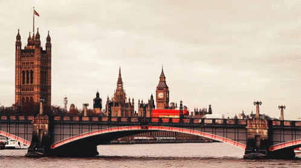

Lake Tahoe

Stateline Lake Tahoe

“All parts of Lake Tahoe are beautiful and have something unique to offer. South Lake Tahoe is popular for its ski resorts like Heavenly, Sierra at Tahoe and Kirkwood ski resorts. South Lake Tahoe is also popular for its restaurants, shopping, casino resorts and vibrant nightlife.”
Things to do in Tahoe

“When it comes to things to do in South Lake Tahoe, you can shred down the mountain from 10,067 ft. at Heavenly Mountain Resort's peak or you can dive into the depths of Lake Tahoe. It's more than 1600 ft. deep, making it one of the deepest lakes in North America. Needless to say, there's plenty of things to do in Lake Tahoe above and below the surface.”
Photo Gallery

Yellowstone


Geographical Location: North America
Yellowstone is the first national park in the United States. It covers over 2.2 million acres, and provides an opportunity to see wildlife and explore geothermal areas. In fact, Yellowstone contains about half the world's active geysers.
These unique opportunities also bring out a lot of bad decisions among the tourists. Every year visitors injure themselves or the wildlife by getting close to the animals. You can see examples of people making bad decisions by visiting Yellowstone National Park: Invasion of the Idiots, Tourons of Yellowstone, or Cowboy State Daily.
Photo Gallery


Chiangmai, Thailand


Geographical Location: Asia
Chiang Mai, nestled in the lush hills of northern Thailand, is a city that captivates with its unique blend of cultural richness and natural beauty. Situated approximately 700 kilometers north of Bangkok, Chiang Mai is the largest city in the region and serves as the capital of the province of the same name. Its geographical location is nothing short of enchanting, surrounded by forested mountains and picturesque landscapes. This charming city, often referred to as the "Rose of the North," offers visitors a delightful escape from the bustling urban life, inviting them to explore a realm where tradition meets modernity amidst a backdrop of stunning scenery.
As one of the most iconic cities in the world, London carries a rich history that is matched by its continuous growth and evolution. A powerhouse of culture, politics, and finance, it stands as a city where the past and present exist harmoniously side by side. From the ancient towers that narrate tales of a regal past to modern architectural marvels that reach for the skies, London offers an unrivaled blend of history and modernity.
Photo Gallery


London, United Kingdom

Geographical Location: Europe
As one of the most iconic cities in the world, London carries a rich history that is matched by its continuous growth and evolution. A powerhouse of culture, politics, and finance, it stands as a city where the past and present exist harmoniously side by side. From the ancient towers that narrate tales of a regal past to modern architectural marvels that reach for the skies, London offers an unrivaled blend of history and modernity.
The heart of Chiang Mai beats with a rich history that dates back over 700 years. Founded in 1296, the city was originally the capital of the ancient Lanna Kingdom. Today, remnants of its storied past are scattered throughout the city, from the ancient temples that dot the landscape to the preserved city walls and moats that harken back to a bygone era. Among the city's treasures is the revered Wat Phra Singh, a 14th-century temple known for its intricate architecture and revered Buddha image. Chiang Mai's historical sites provide a captivating glimpse into its heritage, making it a destination that seamlessly weaves together the past and present for visitors to explore and appreciate.
Photo Gallery